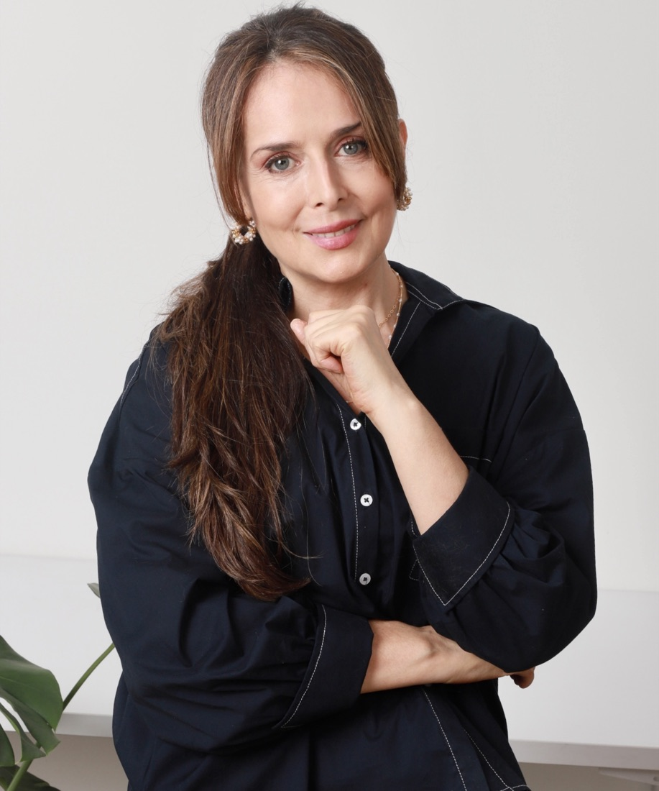
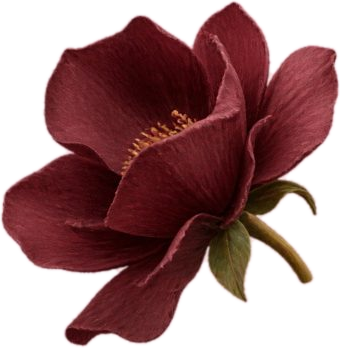
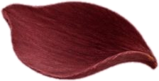
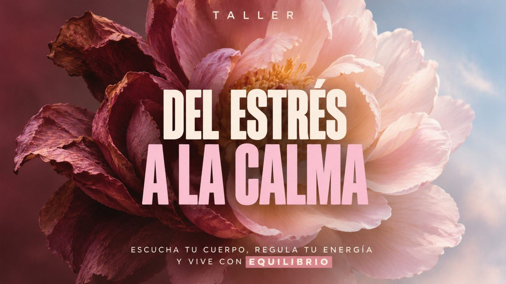
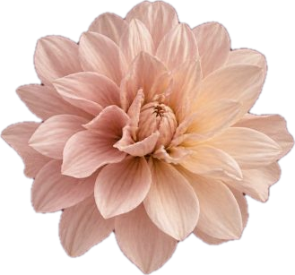
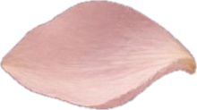
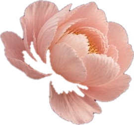
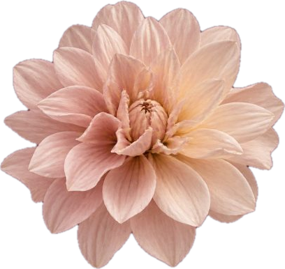

Pastora y coach
María Fernanda Barrera
Administradora de empresas, pastora y coach certificada por John Maxwell. Te enseña a comprender cómo funciona tu sistema nervioso de una manera sencilla.
Dirige Comprender


Tres horas para salir del piloto automático, entender qué le pasa a tu cuerpo cuando vives en alerta y aprender a volver a la calma.
Quiero mi cupo


¿Y si el problema no fuera solo todo lo que estás viviendo, sino que aprendiste a vivir sin escucharte?
Le decimos «es normal, ya pasará» y seguimos. Pero tu cuerpo no miente: cuando no paras por elección, él te obliga a parar por saturación.
«Yo soy la vid y ustedes los pámpanos; el que permanece en mí, y yo en él, éste lleva mucho fruto.»Juan 15:5
El pámpano no se estresa por fabricar uvas: permanece unido a la vid y el fruto llega. Ese es el Código de la Vid, el diseño original para vivir en plenitud.

Vivencial, práctico y espiritual. Cada hora tiene una pregunta y una herramienta que te llevas a casa.
Ponemos sobre la mesa todo lo que cargas: trabajo, casa, hijos, cuentas y la presión de ser perfecta. Descubrimos por qué el servicio sin pausa se vuelve agotamiento, y qué nos enseñan Marta y María sobre el afán.
Con la historia del perro feroz entiendes, de forma sencilla, cómo tu cerebro enciende la alarma y cómo la apaga. Y por qué las deudas, las discusiones o el «¿y si algo malo pasa?» la dejan prendida.
Descanso físico, mental y espiritual como diseño de Dios. Dos claves para cambiar tu relación con el estrés: encontrar el propósito de lo que haces y aprender a poner límites sin culpa.
No te vas solo con información. Te vas con herramientas y con una decisión.
Reconocer las señales de cansancio y tensión antes de que se conviertan en agotamiento.
Ejercicios de respiración, pausa y calma que puedes usar en la casa, la oficina o el carro.
Un plan sencillo de descanso y límites, sostenido desde tu relación con Dios.
Diseñamos cada detalle para que tu cuerpo entienda, desde que entras, que este es un lugar seguro.
Mujeres que han caminado este proceso y hoy ayudan a otras a vivirlo.

Administradora de empresas, pastora y coach certificada por John Maxwell. Te enseña a comprender cómo funciona tu sistema nervioso de una manera sencilla.
Mamá y comunicadora social. Lleva 14 años sirviendo en el ministerio de alabanza y los últimos seis acompañando a mujeres en procesos de sanidad emocional y crecimiento espiritual. Le apasiona enseñar sobre identidad en Cristo, renovación de la mente y relaciones saludables.

Abogada, con una historia de vida que muestra el poder de Dios.
Para mujeres cristianas y no cristianas. No necesitas experiencia previa.
Este taller es un espacio educativo y de crecimiento. No reemplaza la atención médica ni psicológica.
María Fernanda te lo cuenta en un minuto.

Los cupos son limitados para que cada una tenga su espacio.
Reservar mi cupo por WhatsApp